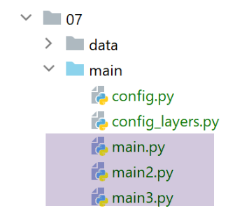

31. Client web per i servizi jSON e XML della versione 12
Scriveremo tre applicazioni client da console per i servizi jSON e XML del server web che abbiamo appena realizzato. Riprendiamo l’architettura client/server della versione 11:

Scriveremo tre script da console:
- gli script [main] e [main3] utilizzeranno il livello [métier] del server;
- lo script [main2] utilizzerà il livello [métier] del client;
31.1. La struttura degli script dei client
La cartella [http-clients/07] viene inizialmente ottenuta copiando la cartella [http-clients/06]. Successivamente viene modificata.

- in [1]: i dati utilizzati o creati dal cliente;
- in [2], la configurazione e gli script della console del cliente;
- in [3], il livello [dao] del cliente;
- in [4], la cartella dei test del livello [dao] del cliente;
31.2. Il livello [dao] dei clienti


31.2.1. Interfaccia
Il livello [dao] implementerà la seguente interfaccia [InterfaceImpôtsDaoWithHttpSession]:
from abc import abstractmethod
from AbstractImpôtsDao import AbstractImpôtsDao
from AdminData import AdminData
from TaxPayer import TaxPayer
class InterfaceImpôtsDaoWithHttpSession(AbstractImpôtsDao):
# calcolo dell'imposta per unità
@abstractmethod
def calculate_tax(self, taxpayer: TaxPayer):
pass
# calcolo dell'imposta per lotti
@abstractmethod
def calculate_tax_in_bulk_mode(self, taxpayers: list):
pass
# inizializzazione di una sessione
@abstractmethod
def init_session(self, type_session: str):
pass
# fine della sessione
@abstractmethod
def end_session(self):
pass
# autenticazione
@abstractmethod
def authenticate_user(self, user: str, password: str):
pass
# elenco delle simulazioni
@abstractmethod
def get_simulations(self) -> list:
pass
# eliminazione di una simulazione
@abstractmethod
def delete_simulation(self, id: int) -> list:
pass
# ottenere i dati necessari per il calcolo dell'imposta
@abstractmethod
def get_admindata(self) -> AdminData:
pass
Ogni metodo dell’interfaccia corrisponde a un servizio URL del server di calcolo delle imposte.
- riga 7: l’interfaccia estende la classe [AbstractDao] che gestisce gli accessi al sistema di file;
La corrispondenza tra i metodi e i servizi URL è definita nel file di configurazione [config]:
# il server per il calcolo dell'imposta
"server": {
"urlServer": "http://127.0.0.1:5000",
"user": {
"login": "admin",
"password": "admin"
},
"url_services": {
"calculate-tax": "/calculer-impot",
"get-admindata": "/get-admindata",
"calculate-tax-in-bulk-mode": "/calculer-impots",
"init-session": "/init-session",
"end-session": "/fin-session",
"authenticate-user": "/authentifier-utilisateur",
"get-simulations": "/lister-simulations",
"delete-simulation": "/supprimer-simulation"
}
31.2.2. Implementazione
L’interfaccia [InterfaceImpôtsDaoWithHttpSession] è implementata dalla seguente classe [ImpôtsDaoWithHttpSession]:
# importazioni
import json
import requests
import xmltodict
from flask_api import status
from AbstractImpôtsDao import AbstractImpôtsDao
from AdminData import AdminData
from ImpôtsError import ImpôtsError
from InterfaceImpôtsDaoWithHttpSession import InterfaceImpôtsDaoWithHttpSession
from TaxPayer import TaxPayer
class ImpôtsDaoWithHttpSession(InterfaceImpôtsDaoWithHttpSession):
# costruttore
def __init__(self, config: dict):
# inizializzazione genitore
AbstractImpôtsDao.__init__(self, config)
# memorizzazione degli elementi di configurazione
# configurazione generale
self.__config = config
# server
self.__config_server = config["server"]
# servizi
self.__config_services = config["server"]['url_services']
# modalità debug
self.__debug = config["debug"]
# registratore
self.__logger = None
# cookie
self.__cookies = None
# tipo di sessione (json, xml)
self.__session_type = None
# fase richiesta/risposta
def get_response(self, method: str, url_service: str, data_value: dict = None, json_value=None):
# [method]: metodo HTTP GET o POST
# [url_service]: URL di servizio
# [data]: parametri di POST in formato x-www-form-urlencoded
# [json]: parametri di POST in formato JSON
# [cookies]: cookie da includere nella richiesta
# è necessario disporre di una sessione XML o JSON, altrimenti non sarà possibile gestire la risposta
if self.__session_type not in ['json', 'xml']:
raise ImpôtsError(73, "il n'y a pas de session valide en cours")
# connessione
if method == "GET":
# GET
response = requests.get(url_service, cookies=self.__cookies)
else:
# POST
response = requests.post(url_service, data=data_value, json=json_value, cookies=self.__cookies)
# modalità debug?
if self.__debug:
# logger
if not self.__logger:
self.__logger = self.__config['logger']
# si sta effettuando l'accesso
self.__logger.write(f"{response.text}\n")
# risultato
if self.__session_type == "json":
résultat = json.loads(response.text)
else: # xml
résultat = xmltodict.parse(response.text[39:])['root']
# si recuperano i cookie dalla risposta, se presenti
if response.cookies:
self.__cookies = response.cookies
# codice di stato
status_code = response.status_code
# se il codice di stato è diverso da 200 OK
if status_code != status.HTTP_200_OK:
raise ImpôtsError(35, résultat['réponse'])
# si restituisce il risultato
return résultat['réponse']
def init_session(self, session_type: str):
# si registra il tipo di sessione
self.__session_type = session_type
# URL del servizio
config_server = self.__config_server
url_service = f"{config_server['urlServer']}{self.__config_services['init-session']}/{session_type}"
# esecuzione della richiesta
self.get_response("GET", url_service)
…
- righe 16-34: il costruttore della classe;
- riga 19: viene inizializzata la classe padre;
- righe 21-28: vengono memorizzati alcuni dati di configurazione;
- righe 29-34: si creano tre proprietà utilizzate nei metodi della classe;
- righe 36-82: il metodo [get_response] fattorizza ciò che è comune a tutti i metodi del livello [dao]: l’invio di una richiesta HTTP e il recupero della risposta HTTP dal server;
- righe 38-42: definizione dei 5 parametri del metodo [get_response];
- riga 42: si noti che, poiché il server mantiene una sessione, il client deve leggere e rinviare i cookie;
- righe 44-46: si verifica che vi sia effettivamente una sessione valida in corso;
- riga 51: caso del metodo GET. Si rinviano i cookie ricevuti;
- riga 54: caso del POST. Questo può avere due tipi di parametri:
- il tipo [x-www-form-urlencoded]. È il caso di URL, [/calculer-impot] e [/authentifier-utilisateur]. In questo caso si utilizza il parametro [data_value] ricevuto dal metodo;
- il tipo [json]. È il caso di URL e [/calculer-impots]. Si utilizza quindi il parametro [json_value] ricevuto dal metodo;
Anche in questo caso, viene restituito il cookie di sessione.
- righe 56-62: se ci si trova in modalità [debug], la risposta del server viene registrata nel log. Questo log è importante perché permette di sapere esattamente cosa ha restituito il server;
- righe 64-68: a seconda che ci si trovi in modalità json o xml, la risposta testuale del server viene trasformata in un dizionario. Prendiamo l’esempio di URL [/init-session]:
La risposta jSON è la seguente:
2020-08-03 11:45:21.218116, MainThread : {"action": "init-session", "état": 700, "réponse": ["session démarrée avec le type de réponse json"]}
La risposta XML è la seguente:
2020-08-03 11:45:54.671871, MainThread : <?xml version="1.0" encoding="utf-8"?>
<root><action>init-session</action><état>700</état><réponse>session démarrée avec le type de réponse xml</réponse></root>
Il codice delle righe 64-68 garantisce che in entrambi i casi si ottenga in [résultat] un dizionario con le chiavi [action, état, réponse];
- righe 70-72: se la risposta contiene cookie, questi vengono recuperati. Sarà necessario inviarli nuovamente nella richiesta successiva;
- righe 74-79: se lo stato HTTP della risposta è diverso da 200, viene generata un'eccezione con il messaggio di errore contenuto in risultato[’réponse’]. Può trattarsi di un singolo errore o di un elenco di errori;
- righe 81-82: si restituisce la risposta del server al codice chiamante;
[init_session]
- riga 84: il metodo [init_session] serve a impostare il tipo di sessione (json o xml) che il client desidera avviare con il server;
- riga 86: si registra il tipo di sessione desiderato all’interno della classe. Infatti, tutti i metodi necessitano di questa informazione per decodificare correttamente la risposta del server;
- righe 88-90: tramite la configurazione dell’applicazione, si determina il servizio URL da interrogare;
- riga 93: viene interrogato il servizio URL. Non si recupera il risultato del metodo [get_response]:
- se genera un'eccezione, l'operazione è fallita. L'eccezione non viene gestita in questa sede e verrà segnalata direttamente al codice chiamante, che interromperà quindi il client con un messaggio di errore;
- se non genera un'eccezione, significa che l'inizializzazione della sessione è andata a buon fine;
[authenticate_user]
def authenticate_user(self, user: str, password: str):
# URL del servizio
config_server = self.__config_server
url_service = f"{config_server['urlServer']}{self.__config_services['authenticate-user']}"
post_params = {
"user": user,
"password": password
}
# Esecuzione della richiesta
self.get_response("POST", url_service, post_params)
- il metodo [authenticate_user] serve per autenticarsi presso il server. A tal fine riceve le credenziali di accesso [user, password] alla riga 1;
- righe 2-4: si determina il servizio URL da interrogare;
- righe 5-8: i parametri del POST, poiché il URL [/authentifier-utilisateur] attende un POST con parametri [user, password];
- riga 11: la richiesta viene eseguita. Anche in questo caso non viene recuperata la risposta del server. È l’eccezione generata da [get_response] che indica se l’operazione ha avuto esito positivo o meno;
[calculate_tax]
def calculate_tax(self, taxpayer: TaxPayer):
# URL del servizio
config_server = self.__config_server
url_service = f"{config_server['urlServer']}{self.__config_services['calculate-tax']}"
# parametri di POST
post_params = {
"marié": taxpayer.marié,
"enfants": taxpayer.enfants,
"salaire": taxpayer.salaire
}
# esecuzione della richiesta
response = self.get_response("POST", url_service, post_params)
# aggiornamento di TaxPayer con la risposta
taxpayer.fromdict(response)
- il metodo [calculate_tax] consente di calcolare l’imposta di un contribuente [taxpayer] passato come parametro. Questo parametro viene modificato dal metodo (riga 15) e costituisce quindi il risultato del metodo;
- righe 2-4: si definisce il servizio URL da interrogare;
- righe 6-10: i parametri del POST da inviare. Infatti, il servizio URL del servizio [/calculer-impot] attende un POST con i parametri [marié, enfants, salaire];
- righe 12-13: la richiesta viene eseguita e viene recuperata la risposta del server. Il servizio URL del servizio [/calculer-impot] restituisce un dizionario con le chiavi [impôt, décôte, surcôte, réduction, taux] relative all’imposta;
- riga 15: il dizionario [response] ottenuto viene utilizzato per aggiornare il contribuente [taxpayer];
[calculate_tax_in_bulk_mode]
# calcolo dell'imposta in modalità batch
def calculate_tax_in_bulk_mode(self, taxpayers: list):
# si lasciano risalire le eccezioni
# si trasformano i contribuenti in un elenco di dizionari
# si mantengono solo le proprietà [marié, enfants, salaire]
list_dict_taxpayers = list(
map(lambda taxpayer:
taxpayer.asdict(included_keys=[
'_TaxPayer__marié',
'_TaxPayer__enfants',
'_TaxPayer__salaire']),
taxpayers))
# URL del servizio
config_server = self.__config_server
url_service = f"{config_server['urlServer']}{self.__config_services['calculate-tax-in-bulk-mode']}"
# esecuzione della richiesta
list_dict_taxpayers2 = self.get_response("POST", url_service, data_value=None, json_value=list_dict_taxpayers)
# quando c'è un solo contribuente e ci si trova in una sessione XML, [list_dict_taxpayers2] non è un elenco
# in questo caso lo si trasforma in un elenco
if not isinstance(list_dict_taxpayers2, list):
list_dict_taxpayers2 = [list_dict_taxpayers2]
# si aggiorna l’elenco iniziale dei contribuenti con i risultati ricevuti
for i in range(len(taxpayers)):
# aggiornamento dei contribuenti [i]
taxpayers[i].fromdict(list_dict_taxpayers2[i])
# qui il parametro [taxpayers] è stato aggiornato con i risultati del server
- riga 2: il metodo riceve un elenco di contribuenti di tipo TaxPayer;
- righe 7-13: questo elenco di elementi di tipo [TaxPayer] viene trasformato in un elenco di dizionari [marié, enfants, salaire];
- righe 15-17: si imposta il URL di servizio;
- righe 19-20: si esegue una richiesta POST il cui corpo jSON è costituito dall'elenco dei dizionari creato alla riga 7. Si recupera la risposta dal server;
- righe 23-24: i test hanno evidenziato un problema quando la sessione è di tipo XML:
- se l’elenco iniziale dei contribuenti contiene N elementi (N>1), si ottiene come risultato un elenco di N dizionari di tipo [OrderedDict];
- se l’elenco iniziale ha un solo elemento, non si ottiene un elenco ma un elemento di tipo [OrderedDict];
- righe 23-24: se ci si trova in quest'ultimo caso (1 elemento), si trasforma il risultato in un elenco di 1 elemento;
- righe 25-28: questa lista di dizionari ricevuti contiene l’imposta di ciascun contribuente della lista iniziale. Si aggiorna quindi ciascuno di essi con i risultati ricevuti;
[get_simulations]
def get_simulations(self) -> list:
# URL del servizio
config_server = self.__config_server
url_service = f"{config_server['urlServer']}{self.__config_services['get-simulations']}"
# esecuzione della richiesta
return self.get_response("GET", url_service)
- riga 1: il metodo richiede l'elenco delle simulazioni effettuate nella sessione corrente;
- riga 2: il metodo restituisce la risposta del server;
[delete_simulation]
def delete_simulation(self, id: int) -> list:
# URL del servizio
config_server = self.__config_server
url_service = f"{config_server['urlServer']}{self.__config_services['delete-simulation']}/{id}"
# esecuzione della richiesta
return self.get_response("GET", url_service)
- riga 1: il metodo elimina la simulazione il cui identificativo viene passato;
- riga 7: restituisce la risposta del server, ovvero l'elenco delle simulazioni rimanenti dopo l'eliminazione richiesta;
[get-admindata]
def get_admindata(self) -> AdminData:
# si lasciano risalire le eccezioni
# URL del servizio
config_server = self.__config_server
url_service = f"{config_server['urlServer']}{self.__config_services['get-admindata']}"
# esecuzione della richiesta
résultat = self.get_response("GET", url_service)
# il risultato è un dizionario di valori di tipo stringa se la sessione è in formato XML
if self.__session_type == 'xml':
# nuovo dizionario
résultat2 = {}
# si converte tutto in valori numerici
for key, value in résultat.items():
# alcuni elementi del dizionario sono elenchi
if isinstance(value, list):
values = []
for value2 in value:
values.append(float(value2))
résultat2[key] = values
else:
# altri sono semplici elementi
résultat2[key] = float(value)
else:
résultat2 = résultat
# risultato di tipo AdminData
return AdminData().fromdict(résultat2)
- riga 1: il metodo richiede al server le costanti fiscali necessarie per il calcolo dell'imposta;
- riga 29: restituisce un tipo [AdminData];
- riga 9: si recupera la risposta del server sotto forma di dizionario. I test dimostrano che si verifica un problema quando la sessione è di tipo XML: invece di essere valori numerici, i valori del dizionario sono stringhe di caratteri. Avevamo segnalato questo problema durante l’analisi del modulo [xmltodict] e constatato che si trattava di un comportamento normale. [xmltodict] non contiene informazioni sui tipi nel flusso XML che gli viene fornito. Detto questo, in questo caso specifico, è necessario convertire in valori numerici tutti i valori del dizionario ricevuto. Quest’ultimo contiene tre elenchi [limites, coeffr, coeffn] e una serie di proprietà numeriche;
- righe 13-25: creazione di un dizionario [résultat2] con valori numerici a partire dal dizionario [résultat] con valori di tipo stringa di caratteri;
- riga 29: il dizionario [resultat2] viene utilizzato per inizializzare un tipo [AdminData];
31.2.3. La factory del livello [dao]
I nostri client saranno multithread. Poiché il livello [dao] è implementato da una classe con stato di lettura/scrittura (= proprietà di lettura/scrittura), ogni thread deve disporre di un proprio livello [dao] oppure è necessario sincronizzare l’accesso ai dati condivisi tra i thread. In questo caso adottiamo la prima soluzione. Utilizziamo una classe [ImpôtsDaoWithHttpSessionFactory] in grado di creare istanze del livello [dao]:
from ImpôtsDaoWithHttpSession import ImpôtsDaoWithHttpSession
class ImpôtsDaoWithHttpSessionFactory:
def __init__(self, config: dict):
# si memorizza il parametro
self.__config = config
def new_instance(self):
# si restituisce un'istanza del livello [dao]
return ImpôtsDaoWithHttpSession(self.__config)
31.3. Configurazione dei client

I client sono configurati dai file [config] e [config_layers]. Il file [config] è il seguente:
def configure(config: dict) -> dict:
import os
# fase 1 ------
# cartella di questo file
script_dir = os.path.dirname(os.path.abspath(__file__))
# percorso radice
root_dir = "C:/Data/st-2020/dev/python/cours-2020/python3-flask-2020"
# dipendenze assolute
absolute_dependencies = [
# cartelle del progetto
# BaseEntity, MyException
f"{root_dir}/classes/02/entities",
# InterfaceImpôtsDao, InterfaceImpôtsMétier, InterfaceImpôtsUi
f"{root_dir}/impots/v04/interfaces",
# AbstractImpôtsdao, ImpôtsConsole, ImpôtsMétier
f"{root_dir}/impots/v04/services",
# ImpotsDaoWithAdminDataInDatabase
f"{root_dir}/impots/v05/services",
# AdminData, ImpôtsError, TaxPayer
f"{root_dir}/impots/v04/entities",
# Costanti, fasce
f"{root_dir}/impots/v05/entities",
# ImpôtsDaoWithHttpSession, ImpôtsDaoWithHttpSessionFactory, InterfaceImpôtsDaoWithHttpSession
f"{script_dir}/../services",
# script di configurazione
script_dir,
# Logger
f"{root_dir}/impots/http-servers/02/utilities",
]
# impostazione del syspath
from myutils import set_syspath
set_syspath(absolute_dependencies)
# fase 2 ------
# Configurazione dell'applicazione con le costanti
config.update({
# file dei contribuenti
"taxpayersFilename": f"{script_dir}/../data/input/taxpayersdata.txt",
# file dei risultati
"resultsFilename": f"{script_dir}/../data/output/résultats.json",
# file degli errori
"errorsFilename": f"{script_dir}/../data/output/errors.txt",
# file di log
"logsFilename": f"{script_dir}/../data/logs/logs.txt",
# server di calcolo delle imposte
"server": {
"urlServer": "http://127.0.0.1:5000",
"user": {
"login": "admin",
"password": "admin"
},
"url_services": {
"calculate-tax": "/calculer-impot",
"get-admindata": "/get-admindata",
"calculate-tax-in-bulk-mode": "/calculer-impots",
"init-session": "/init-session",
"end-session": "/fin-session",
"authenticate-user": "/authentifier-utilisateur",
"get-simulations": "/lister-simulations",
"delete-simulation": "/supprimer-simulation"
}
},
# modalità debug
"debug": True
}
)
# fase 3 ------
# istanziazione dei livelli
import config_layers
config['layers'] = config_layers.configure(config)
# si esegue la configurazione
return config
Il file [config_layers] è il seguente:
def configure(config: dict) -> dict:
# istanziazione dei livelli dell'applicazione
# livello [métier]
from ImpôtsMétier import ImpôtsMétier
métier = ImpôtsMétier()
# factory del livello DAO
from ImpôtsDaoWithHttpSessionFactory import ImpôtsDaoWithHttpSessionFactory
dao_factory = ImpôtsDaoWithHttpSessionFactory(config)
# si restituisce la configurazione dei livelli
return {
"dao_factory": dao_factory,
"métier": métier
}
- i client non avranno accesso diretto al livello [dao]. Per ottenerlo, dovranno passare attraverso la factory del livello [dao];
31.4. Il client [main]

Il client [main] consente di testare i client URL e [/init-session, /authentifier-utilisateur, /calculer-impots, /fin-session]:
# si attende un parametro JSON o XML
import sys
syntaxe = f"{sys.argv[0]} json / xml"
erreur = len(sys.argv) != 2
if not erreur:
session_type = sys.argv[1].lower()
erreur = session_type != "json" and session_type != "xml"
if erreur:
print(f"syntaxe : {syntaxe}")
sys.exit()
# si configura l'applicazione
import config
config = config.configure({"session_type": session_type})
# dipendenze
from ImpôtsError import ImpôtsError
import random
import sys
import threading
from Logger import Logger
# esecuzione del livello [dao] in un thread
# taxpayers è un elenco di contribuenti
def thread_function(config: dict, taxpayers: list):
# si recupera la factory del livello [dao]
dao_factory = config['layers']['dao_factory']
# si crea un'istanza del livello [dao]
dao = dao_factory.new_instance()
# tipo di sessione
session_type = config['session_type']
# numero di contribuenti
nb_taxpayers = len(taxpayers)
# log
logger.write(f"début du calcul de l'impôt des {nb_taxpayers} contribuables\n")
# si inizializza la sessione
dao.init_session(session_type)
# autenticazione
dao.authenticate_user(config['server']['user']['login'], config['server']['user']['password'])
# si calcola l'imposta dei contribuenti
dao.calculate_tax_in_bulk_mode(taxpayers)
# fine della sessione
dao.end_session()
# log
logger.write(f"fin du calcul de l'impôt des {nb_taxpayers} contribuables\n")
# elenco dei thread del client
threads = []
logger = None
# codice
try:
# logger
logger = Logger(config["logsFilename"])
# lo si memorizza nella configurazione
config["logger"] = logger
# log di avvio
logger.write("début du calcul de l'impôt des contribuables\n")
# si recupera la factory del livello [dao]
dao_factory = config["layers"]["dao_factory"]
# si crea un'istanza del livello [dao]
dao = dao_factory.new_instance()
# lettura dei dati dei contribuenti
taxpayers = dao.get_taxpayers_data()["taxpayers"]
# dei contribuenti?
if not taxpayers:
raise ImpôtsError(36, f"Pas de contribuables valides dans le fichier {config['taxpayersFilename']}")
# calcolo dell'imposta dei contribuenti con più thread
i = 0
l_taxpayers = len(taxpayers)
while i < len(taxpayers):
# ogni thread elaborerà da 1 a 4 contribuenti
nb_taxpayers = min(l_taxpayers - i, random.randint(1, 4))
# l'elenco dei contribuenti elaborati dal thread
thread_taxpayers = taxpayers[slice(i, i + nb_taxpayers)]
# si incrementa i per il thread successivo
i += nb_taxpayers
# si crea il thread
thread = threading.Thread(target=thread_function, args=(config, thread_taxpayers))
# lo si aggiunge all'elenco dei thread dello script principale
threads.append(thread)
# si avvia il thread - questa operazione è asincrona - non si attende il risultato del thread
thread.start()
# il thread principale attende il completamento di tutti i thread che ha avviato
for thread in threads:
thread.join()
# qui tutti i thread hanno terminato il loro lavoro - ciascuno ha modificato uno o più oggetti [taxpayer]
# i risultati vengono salvati nel file jSON
dao.write_taxpayers_results(taxpayers)
# fine
except BaseException as erreur:
# visualizzazione dell'errore
print(f"L'erreur suivante s'est produite : {erreur}")
finally:
# si chiude il logger
if logger:
# log di fine
logger.write("fin du calcul de l'impôt des contribuables\n")
# chiusura del logger
logger.close()
# operazione completata
print("Travail terminé...")
# chiusura dei thread che potrebbero ancora essere attivi se l'esecuzione si è interrotta a causa di un errore
sys.exit()
- righe 4-11: il client attende un parametro che indichi il tipo di sessione, json o xml, da utilizzare con il server;
- righe 13-15: il client è configurato;
- righe 48-104: questo codice è noto. È stato utilizzato numerose volte. Distribuisce i contribuenti per i quali si desidera calcolare l’imposta su più thread;
- riga 26: il metodo [thread_function] è il metodo eseguito da ciascun thread per calcolare l’imposta dei contribuenti che gli sono stati assegnati;
- righe 27-30: ogni thread ha il proprio livello [dao];
- il calcolo dell’imposta avviene in quattro fasi:
- righe 37-38: inizializzazione di una sessione, in formato json o xml, con il server;
- righe 39-40: autenticazione presso il server;
- righe 41-42: calcolo dell’imposta;
- righe 43-44: chiusura della sessione con il server;
Quando si esegue questo codice in modalità [json], si ottengono i seguenti log:
2020-08-03 14:28:34.320751, MainThread : début du calcul de l'impôt des contribuables
2020-08-03 14:28:34.328749, Thread-1 : début du calcul de l'impôt des 4 contribuables
2020-08-03 14:28:34.328749, Thread-2 : début du calcul de l'impôt des 4 contribuables
2020-08-03 14:28:34.333592, Thread-3 : début du calcul de l'impôt des 3 contribuables
2020-08-03 14:28:34.368651, Thread-2 : {"action": "init-session", "état": 700, "réponse": ["session démarrée avec le type de réponse json"]}
2020-08-03 14:28:34.375699, Thread-1 : {"action": "init-session", "état": 700, "réponse": ["session démarrée avec le type de réponse json"]}
2020-08-03 14:28:34.377432, Thread-3 : {"action": "init-session", "état": 700, "réponse": ["session démarrée avec le type de réponse json"]}
2020-08-03 14:28:34.385653, Thread-2 : {"action": "authentifier-utilisateur", "état": 200, "réponse": "Authentification réussie"}
2020-08-03 14:28:34.392656, Thread-1 : {"action": "authentifier-utilisateur", "état": 200, "réponse": "Authentification réussie"}
2020-08-03 14:28:34.396377, Thread-3 : {"action": "authentifier-utilisateur", "état": 200, "réponse": "Authentification réussie"}
2020-08-03 14:28:34.406528, Thread-2 : {"action": "calculer-impots", "état": 1500, "réponse": [{"marié": "non", "enfants": 3, "salaire": 100000, "impôt": 16782, "surcôte": 7176, "taux": 0.41, "décôte": 0, "réduction": 0, "id": 1}, {"marié": "oui", "enfants": 3, "salaire": 100000, "impôt": 9200, "surcôte": 2180, "taux": 0.3, "décôte": 0, "réduction": 0, "id": 2}, {"marié": "oui", "enfants": 5, "salaire": 100000, "impôt": 4230, "surcôte": 0, "taux": 0.14, "décôte": 0, "réduction": 0, "id": 3}, {"marié": "non", "enfants": 0, "salaire": 100000, "impôt": 22986, "surcôte": 0, "taux": 0.41, "décôte": 0, "réduction": 0, "id": 4}]}
2020-08-03 14:28:34.413837, Thread-1 : {"action": "calculer-impots", "état": 1500, "réponse": [{"marié": "oui", "enfants": 2, "salaire": 55555, "impôt": 2814, "surcôte": 0, "taux": 0.14, "décôte": 0, "réduction": 0, "id": 1}, {"marié": "oui", "enfants": 2, "salaire": 50000, "impôt": 1384, "surcôte": 0, "taux": 0.14, "décôte": 384, "réduction": 347, "id": 2}, {"marié": "oui", "enfants": 3, "salaire": 50000, "impôt": 0, "surcôte": 0, "taux": 0.14, "décôte": 720, "réduction": 0, "id": 3}, {"marié": "non", "enfants": 2, "salaire": 100000, "impôt": 19884, "surcôte": 4480, "taux": 0.41, "décôte": 0, "réduction": 0, "id": 4}]}
2020-08-03 14:28:34.416695, Thread-3 : {"action": "calculer-impots", "état": 1500, "réponse": [{"marié": "oui", "enfants": 2, "salaire": 30000, "impôt": 0, "surcôte": 0, "taux": 0.0, "décôte": 0, "réduction": 0, "id": 1}, {"marié": "non", "enfants": 0, "salaire": 200000, "impôt": 64210, "surcôte": 7498, "taux": 0.45, "décôte": 0, "réduction": 0, "id": 2}, {"marié": "oui", "enfants": 3, "salaire": 200000, "impôt": 42842, "surcôte": 17283, "taux": 0.41, "décôte": 0, "réduction": 0, "id": 3}]}
2020-08-03 14:28:34.425747, Thread-2 : {"action": "fin-session", "état": 400, "réponse": "session réinitialisée"}
2020-08-03 14:28:34.425747, Thread-2 : fin du calcul de l'impôt des 4 contribuables
2020-08-03 14:28:34.428956, Thread-1 : {"action": "fin-session", "état": 400, "réponse": "session réinitialisée"}
2020-08-03 14:28:34.428956, Thread-1 : fin du calcul de l'impôt des 4 contribuables
2020-08-03 14:28:34.428956, Thread-3 : {"action": "fin-session", "état": 400, "réponse": "session réinitialisée"}
2020-08-03 14:28:34.428956, Thread-3 : fin du calcul de l'impôt des 3 contribuables
2020-08-03 14:28:34.428956, MainThread : fin du calcul de l'impôt des contribuables
Qui sopra è riportato il percorso del thread [Thread-2].
Se si esegue [main] in modalità XML, i log sono i seguenti:
2020-08-03 14:32:48.495316, MainThread : début du calcul de l'impôt des contribuables
2020-08-03 14:32:48.496452, Thread-1 : début du calcul de l'impôt des 2 contribuables
2020-08-03 14:32:48.498992, Thread-2 : début du calcul de l'impôt des 2 contribuables
2020-08-03 14:32:48.498992, Thread-3 : début du calcul de l'impôt des 4 contribuables
2020-08-03 14:32:48.498992, Thread-4 : début du calcul de l'impôt des 3 contribuables
2020-08-03 14:32:48.538637, Thread-1 : <?xml version="1.0" encoding="utf-8"?>
<root><action>init-session</action><état>700</état><réponse>session démarrée avec le type de réponse xml</réponse></root>
2020-08-03 14:32:48.540783, Thread-4 : <?xml version="1.0" encoding="utf-8"?>
<root><action>init-session</action><état>700</état><réponse>session démarrée avec le type de réponse xml</réponse></root>
2020-08-03 14:32:48.547811, Thread-3 : <?xml version="1.0" encoding="utf-8"?>
<root><action>init-session</action><état>700</état><réponse>session démarrée avec le type de réponse xml</réponse></root>
2020-08-03 14:32:48.547811, Thread-2 : <?xml version="1.0" encoding="utf-8"?>
<root><action>init-session</action><état>700</état><réponse>session démarrée avec le type de réponse xml</réponse></root>
2020-08-03 14:32:48.555184, Thread-1 : <?xml version="1.0" encoding="utf-8"?>
<root><action>authentifier-utilisateur</action><état>200</état><réponse>Authentification réussie</réponse></root>
2020-08-03 14:32:48.564793, Thread-2 : <?xml version="1.0" encoding="utf-8"?>
<root><action>authentifier-utilisateur</action><état>200</état><réponse>Authentification réussie</réponse></root>
2020-08-03 14:32:48.564793, Thread-3 : <?xml version="1.0" encoding="utf-8"?>
<root><action>authentifier-utilisateur</action><état>200</état><réponse>Authentification réussie</réponse></root>
2020-08-03 14:32:48.568333, Thread-4 : <?xml version="1.0" encoding="utf-8"?>
<root><action>authentifier-utilisateur</action><état>200</état><réponse>Authentification réussie</réponse></root>
2020-08-03 14:32:48.568333, Thread-1 : <?xml version="1.0" encoding="utf-8"?>
<root><action>calculer-impots</action><état>1500</état><réponse><marié>oui</marié><enfants>2</enfants><salaire>55555</salaire><impôt>2814</impôt><surcôte>0</surcôte><taux>0.14</taux><décôte>0</décôte><réduction>0</réduction><id>1</id></réponse><réponse><marié>oui</marié><enfants>2</enfants><salaire>50000</salaire><impôt>1384</impôt><surcôte>0</surcôte><taux>0.14</taux><décôte>384</décôte><réduction>347</réduction><id>2</id></réponse></root>
2020-08-03 14:32:48.579205, Thread-2 : <?xml version="1.0" encoding="utf-8"?>
<root><action>calculer-impots</action><état>1500</état><réponse><marié>oui</marié><enfants>3</enfants><salaire>50000</salaire><impôt>0</impôt><surcôte>0</surcôte><taux>0.14</taux><décôte>720</décôte><réduction>0</réduction><id>1</id></réponse><réponse><marié>non</marié><enfants>2</enfants><salaire>100000</salaire><impôt>19884</impôt><surcôte>4480</surcôte><taux>0.41</taux><décôte>0</décôte><réduction>0</réduction><id>2</id></réponse></root>
2020-08-03 14:32:48.579205, Thread-3 : <?xml version="1.0" encoding="utf-8"?>
<root><action>calculer-impots</action><état>1500</état><réponse><marié>non</marié><enfants>3</enfants><salaire>100000</salaire><impôt>16782</impôt><surcôte>7176</surcôte><taux>0.41</taux><décôte>0</décôte><réduction>0</réduction><id>1</id></réponse><réponse><marié>oui</marié><enfants>3</enfants><salaire>100000</salaire><impôt>9200</impôt><surcôte>2180</surcôte><taux>0.3</taux><décôte>0</décôte><réduction>0</réduction><id>2</id></réponse><réponse><marié>oui</marié><enfants>5</enfants><salaire>100000</salaire><impôt>4230</impôt><surcôte>0</surcôte><taux>0.14</taux><décôte>0</décôte><réduction>0</réduction><id>3</id></réponse><réponse><marié>non</marié><enfants>0</enfants><salaire>100000</salaire><impôt>22986</impôt><surcôte>0</surcôte><taux>0.41</taux><décôte>0</décôte><réduction>0</réduction><id>4</id></réponse></root>
2020-08-03 14:32:48.588051, Thread-4 : <?xml version="1.0" encoding="utf-8"?>
<root><action>calculer-impots</action><état>1500</état><réponse><marié>oui</marié><enfants>2</enfants><salaire>30000</salaire><impôt>0</impôt><surcôte>0</surcôte><taux>0.0</taux><décôte>0</décôte><réduction>0</réduction><id>1</id></réponse><réponse><marié>non</marié><enfants>0</enfants><salaire>200000</salaire><impôt>64210</impôt><surcôte>7498</surcôte><taux>0.45</taux><décôte>0</décôte><réduction>0</réduction><id>2</id></réponse><réponse><marié>oui</marié><enfants>3</enfants><salaire>200000</salaire><impôt>42842</impôt><surcôte>17283</surcôte><taux>0.41</taux><décôte>0</décôte><réduction>0</réduction><id>3</id></réponse></root>
2020-08-03 14:32:48.594058, Thread-1 : <?xml version="1.0" encoding="utf-8"?>
<root><action>fin-session</action><état>400</état><réponse>session réinitialisée</réponse></root>
2020-08-03 14:32:48.595198, Thread-1 : fin du calcul de l'impôt des 2 contribuables
2020-08-03 14:32:48.595198, Thread-2 : <?xml version="1.0" encoding="utf-8"?>
<root><action>fin-session</action><état>400</état><réponse>session réinitialisée</réponse></root>
2020-08-03 14:32:48.595198, Thread-2 : fin du calcul de l'impôt des 2 contribuables
2020-08-03 14:32:48.595198, Thread-3 : <?xml version="1.0" encoding="utf-8"?>
<root><action>fin-session</action><état>400</état><réponse>session réinitialisée</réponse></root>
2020-08-03 14:32:48.595198, Thread-3 : fin du calcul de l'impôt des 4 contribuables
2020-08-03 14:32:48.603351, Thread-4 : <?xml version="1.0" encoding="utf-8"?>
<root><action>fin-session</action><état>400</état><réponse>session réinitialisée</réponse></root>
2020-08-03 14:32:48.603351, Thread-4 : fin du calcul de l'impôt des 3 contribuables
2020-08-03 14:32:48.603351, MainThread : fin du calcul de l'impôt des contribuables
Sopra è riportato il percorso del thread [Thread-2].
31.5. Il client [main2]
Il client [main2] consente di testare i client URL e [/init-session, /authentifier-utilisateur, /get-admindata, /fin-session]:
# si attende un parametro json o xml
import sys
syntaxe = f"{sys.argv[0]} json / xml"
erreur = len(sys.argv) != 2
if not erreur:
session_type = sys.argv[1].lower()
erreur = session_type != "json" and session_type != "xml"
if erreur:
print(f"syntaxe : {syntaxe}")
sys.exit()
# si sta configurando l'applicazione
import config
config = config.configure({"session_type": session_type})
# dipendenze
from ImpôtsError import ImpôtsError
from Logger import Logger
logger = None
# codice
try:
# logger
logger = Logger(config["logsFilename"])
# lo si memorizza nella configurazione
config["logger"] = logger
# log di avvio
logger.write("début du calcul de l'impôt des contribuables\n")
# si recupera la factory del livello [dao]
dao_factory = config['layers']['dao_factory']
# si crea un'istanza del livello [dao]
dao = dao_factory.new_instance()
# si recuperano i contribuenti
taxpayers = dao.get_taxpayers_data()["taxpayers"]
# dei contribuenti?
if not taxpayers:
raise ImpôtsError(36, f"Pas de contribuables valides dans le fichier {config['taxpayersFilename']}")
# tipo di sessione
session_type = config['session_type']
# si inizializza la sessione
dao.init_session(session_type)
# si effettua l'autenticazione
dao.authenticate_user(config['server']['user']['login'], config['server']['user']['password'])
# si recuperano i dati dell'amministrazione fiscale
admindata = dao.get_admindata()
# fine della sessione
dao.end_session()
# calcolo dell'imposta dei contribuenti tramite il livello [métier]
métier = config['layers']['métier']
for taxpayer in taxpayers:
métier.calculate_tax(taxpayer, admindata)
# i risultati vengono salvati nel file jSON
dao.write_taxpayers_results(taxpayers)
except BaseException as erreur:
# visualizzazione dell'errore
print(f"L'erreur suivante s'est produite : {erreur}")
finally:
# si chiude il logger
if logger:
# log di fine
logger.write("fin du calcul de l'impôt des contribuables\n")
# chiusura del logger
logger.close()
# operazione completata
print("Travail terminé...")
- righe 1-11: si recupera il parametro [json, xml] che definisce il tipo di sessione da stabilire con il server;
- righe 13-15: si configura il client;
- righe 30-33: si crea un livello [dao];
- righe 34-35: con esso si recupera l'elenco dei contribuenti per i quali occorre calcolare l'imposta;
- seguono poi le quattro fasi del dialogo con il server;
- righe 41-42: viene avviata una sessione con il server;
- righe 43-44: si effettua l’autenticazione presso il server;
- righe 45-46: si richiedono al server i parametri fiscali necessari per il calcolo dell’imposta;
- righe 47-48: si chiude la sessione con il server;
- righe 49-52: con queste costanti, si è in grado di calcolare l’imposta dei contribuenti utilizzando il livello [métier] locale sul client;
- righe 53-54: si registrano i risultati ottenuti;
Per una sessione XML, i risultati sono i seguenti:
2020-08-03 14:44:43.194294, MainThread : début du calcul de l'impôt des contribuables
2020-08-03 14:44:43.231633, MainThread : <?xml version="1.0" encoding="utf-8"?>
<root><action>init-session</action><état>700</état><réponse>session démarrée avec le type de réponse xml</réponse></root>
2020-08-03 14:44:43.240872, MainThread : <?xml version="1.0" encoding="utf-8"?>
<root><action>authentifier-utilisateur</action><état>200</état><réponse>Authentification réussie</réponse></root>
2020-08-03 14:44:43.250061, MainThread : <?xml version="1.0" encoding="utf-8"?>
<root><action>get-admindata</action><état>1000</état><réponse><limites>9964.0</limites><limites>27519.0</limites><limites>73779.0</limites><limites>156244.0</limites><limites>93749.0</limites><coeffr>0.0</coeffr><coeffr>0.14</coeffr><coeffr>0.3</coeffr><coeffr>0.41</coeffr><coeffr>0.45</coeffr><coeffn>0.0</coeffn><coeffn>1394.96</coeffn><coeffn>5798.0</coeffn><coeffn>13913.7</coeffn><coeffn>20163.4</coeffn><abattement_dixpourcent_min>437.0</abattement_dixpourcent_min><plafond_impot_couple_pour_decote>2627.0</plafond_impot_couple_pour_decote><plafond_decote_couple>1970.0</plafond_decote_couple><valeur_reduc_demi_part>3797.0</valeur_reduc_demi_part><plafond_revenus_celibataire_pour_reduction>21037.0</plafond_revenus_celibataire_pour_reduction><id>1</id><abattement_dixpourcent_max>12502.0</abattement_dixpourcent_max><plafond_impot_celibataire_pour_decote>1595.0</plafond_impot_celibataire_pour_decote><plafond_decote_celibataire>1196.0</plafond_decote_celibataire><plafond_revenus_couple_pour_reduction>42074.0</plafond_revenus_couple_pour_reduction><plafond_qf_demi_part>1551.0</plafond_qf_demi_part></réponse></root>
2020-08-03 14:44:43.269850, MainThread : <?xml version="1.0" encoding="utf-8"?>
<root><action>fin-session</action><état>400</état><réponse>session réinitialisée</réponse></root>
2020-08-03 14:44:43.269850, MainThread : fin du calcul de l'impôt des contribuables
31.6. Il cliente [main3]
Il client [main3] consente di testare i modelli URL e [/init-session, /calculer-impots, /get-simulations, /delete-simulation, /fin-session]:

# si attende un parametro json o xml
import sys
syntaxe = f"{sys.argv[0]} json / xml"
erreur = len(sys.argv) != 2
if not erreur:
session_type = sys.argv[1].lower()
erreur = session_type != "json" and session_type != "xml"
if erreur:
print(f"syntaxe : {syntaxe}")
sys.exit()
# si sta configurando l'applicazione
import config
config = config.configure({"session_type": session_type})
# dipendenze
from ImpôtsError import ImpôtsError
import sys
from Logger import Logger
logger = None
# codice
try:
# logger
logger = Logger(config["logsFilename"])
# lo si memorizza nella configurazione
config["logger"] = logger
# log di avvio
logger.write("début du calcul de l'impôt des contribuables\n")
# si recupera la factory del livello [dao]
dao_factory = config["layers"]["dao_factory"]
# si crea un'istanza del livello [dao]
dao = dao_factory.new_instance()
# lettura dei dati dei contribuenti
taxpayers = dao.get_taxpayers_data()["taxpayers"]
# dei contribuenti?
if not taxpayers:
raise ImpôtsError(36, f"Pas de contribuables valides dans le fichier {config['taxpayersFilename']}")
# calcolo dell'imposta dei contribuenti
# numero di contribuenti
nb_taxpayers = len(taxpayers)
# log
logger.write(f"début du calcul de l'impôt des {nb_taxpayers} contribuables\n")
# si avvia la sessione
dao.init_session(session_type)
# autenticazione
dao.authenticate_user(config['server']['user']['login'], config['server']['user']['password'])
# si calcola l'imposta dei contribuenti
dao.calculate_tax_in_bulk_mode(taxpayers)
# si richiede l'elenco delle simulazioni
simulations = dao.get_simulations()
# se ne elimina una su due
for i in range(len(simulations)):
if i % 2 == 0:
# si elimina la simulazione
dao.delete_simulation(simulations[i]['id'])
# fine della sessione
dao.end_session()
# consultare i log per visualizzare i diversi risultati (modalità debug=True)
except BaseException as erreur:
# visualizzazione dell'errore
print(f"L'erreur suivante s'est produite : {erreur}")
finally:
# chiusura del logger
if logger:
# log di fine
logger.write("fin du calcul de l'impôt des contribuables\n")
# chiusura del logger
logger.close()
# operazione completata
print("Travail terminé...")
- righe 1-11: si recupera il tipo di sessione dai parametri dello script;
- righe 13-15: si configura l'applicazione;
- righe 25-50: si ritrova del codice già spiegato in precedenza;
- righe 51-52: si richiede l'elenco delle simulazioni effettuate nella sessione corrente;
- righe 53-57: si elimina una simulazione su due;
- righe 58-59: si termina la sessione;
Durante una sessione jSON, i log sono i seguenti:
2020-08-03 15:01:52.702297, MainThread : début du calcul de l'impôt des contribuables
2020-08-03 15:01:52.702297, MainThread : début du calcul de l'impôt des 11 contribuables
2020-08-03 15:01:52.734806, MainThread : {"action": "init-session", "état": 700, "réponse": ["session démarrée avec le type de réponse json"]}
2020-08-03 15:01:52.747961, MainThread : {"action": "authentifier-utilisateur", "état": 200, "réponse": "Authentification réussie"}
2020-08-03 15:01:52.765721, MainThread : {"action": "calculer-impots", "état": 1500, "réponse": [{"marié": "oui", "enfants": 2, "salaire": 55555, "impôt": 2814, "surcôte": 0, "taux": 0.14, "décôte": 0, "réduction": 0, "id": 1}, {"marié": "oui", "enfants": 2, "salaire": 50000, "impôt": 1384, "surcôte": 0, "taux": 0.14, "décôte": 384, "réduction": 347, "id": 2}, {"marié": "oui", "enfants": 3, "salaire": 50000, "impôt": 0, "surcôte": 0, "taux": 0.14, "décôte": 720, "réduction": 0, "id": 3}, {"marié": "non", "enfants": 2, "salaire": 100000, "impôt": 19884, "surcôte": 4480, "taux": 0.41, "décôte": 0, "réduction": 0, "id": 4}, {"marié": "non", "enfants": 3, "salaire": 100000, "impôt": 16782, "surcôte": 7176, "taux": 0.41, "décôte": 0, "réduction": 0, "id": 5}, {"marié": "oui", "enfants": 3, "salaire": 100000, "impôt": 9200, "surcôte": 2180, "taux": 0.3, "décôte": 0, "réduction": 0, "id": 6}, {"marié": "oui", "enfants": 5, "salaire": 100000, "impôt": 4230, "surcôte": 0, "taux": 0.14, "décôte": 0, "réduction": 0, "id": 7}, {"marié": "non", "enfants": 0, "salaire": 100000, "impôt": 22986, "surcôte": 0, "taux": 0.41, "décôte": 0, "réduction": 0, "id": 8}, {"marié": "oui", "enfants": 2, "salaire": 30000, "impôt": 0, "surcôte": 0, "taux": 0.0, "décôte": 0, "réduction": 0, "id": 9}, {"marié": "non", "enfants": 0, "salaire": 200000, "impôt": 64210, "surcôte": 7498, "taux": 0.45, "décôte": 0, "réduction": 0, "id": 10}, {"marié": "oui", "enfants": 3, "salaire": 200000, "impôt": 42842, "surcôte": 17283, "taux": 0.41, "décôte": 0, "réduction": 0, "id": 11}]}
2020-08-03 15:01:52.785505, MainThread : {"action": "lister-simulations", "état": 500, "réponse": [{"décôte": 0, "enfants": 2, "id": 1, "impôt": 2814, "marié": "oui", "réduction": 0, "salaire": 55555, "surcôte": 0, "taux": 0.14}, {"décôte": 384, "enfants": 2, "id": 2, "impôt": 1384, "marié": "oui", "réduction": 347, "salaire": 50000, "surcôte": 0, "taux": 0.14}, {"décôte": 720, "enfants": 3, "id": 3, "impôt": 0, "marié": "oui", "réduction": 0, "salaire": 50000, "surcôte": 0, "taux": 0.14}, {"décôte": 0, "enfants": 2, "id": 4, "impôt": 19884, "marié": "non", "réduction": 0, "salaire": 100000, "surcôte": 4480, "taux": 0.41}, {"décôte": 0, "enfants": 3, "id": 5, "impôt": 16782, "marié": "non", "réduction": 0, "salaire": 100000, "surcôte": 7176, "taux": 0.41}, {"décôte": 0, "enfants": 3, "id": 6, "impôt": 9200, "marié": "oui", "réduction": 0, "salaire": 100000, "surcôte": 2180, "taux": 0.3}, {"décôte": 0, "enfants": 5, "id": 7, "impôt": 4230, "marié": "oui", "réduction": 0, "salaire": 100000, "surcôte": 0, "taux": 0.14}, {"décôte": 0, "enfants": 0, "id": 8, "impôt": 22986, "marié": "non", "réduction": 0, "salaire": 100000, "surcôte": 0, "taux": 0.41}, {"décôte": 0, "enfants": 2, "id": 9, "impôt": 0, "marié": "oui", "réduction": 0, "salaire": 30000, "surcôte": 0, "taux": 0.0}, {"décôte": 0, "enfants": 0, "id": 10, "impôt": 64210, "marié": "non", "réduction": 0, "salaire": 200000, "surcôte": 7498, "taux": 0.45}, {"décôte": 0, "enfants": 3, "id": 11, "impôt": 42842, "marié": "oui", "réduction": 0, "salaire": 200000, "surcôte": 17283, "taux": 0.41}]}
2020-08-03 15:01:52.801475, MainThread : {"action": "supprimer-simulation", "état": 600, "réponse": [{"décôte": 384, "enfants": 2, "id": 2, "impôt": 1384, "marié": "oui", "réduction": 347, "salaire": 50000, "surcôte": 0, "taux": 0.14}, {"décôte": 720, "enfants": 3, "id": 3, "impôt": 0, "marié": "oui", "réduction": 0, "salaire": 50000, "surcôte": 0, "taux": 0.14}, {"décôte": 0, "enfants": 2, "id": 4, "impôt": 19884, "marié": "non", "réduction": 0, "salaire": 100000, "surcôte": 4480, "taux": 0.41}, {"décôte": 0, "enfants": 3, "id": 5, "impôt": 16782, "marié": "non", "réduction": 0, "salaire": 100000, "surcôte": 7176, "taux": 0.41}, {"décôte": 0, "enfants": 3, "id": 6, "impôt": 9200, "marié": "oui", "réduction": 0, "salaire": 100000, "surcôte": 2180, "taux": 0.3}, {"décôte": 0, "enfants": 5, "id": 7, "impôt": 4230, "marié": "oui", "réduction": 0, "salaire": 100000, "surcôte": 0, "taux": 0.14}, {"décôte": 0, "enfants": 0, "id": 8, "impôt": 22986, "marié": "non", "réduction": 0, "salaire": 100000, "surcôte": 0, "taux": 0.41}, {"décôte": 0, "enfants": 2, "id": 9, "impôt": 0, "marié": "oui", "réduction": 0, "salaire": 30000, "surcôte": 0, "taux": 0.0}, {"décôte": 0, "enfants": 0, "id": 10, "impôt": 64210, "marié": "non", "réduction": 0, "salaire": 200000, "surcôte": 7498, "taux": 0.45}, {"décôte": 0, "enfants": 3, "id": 11, "impôt": 42842, "marié": "oui", "réduction": 0, "salaire": 200000, "surcôte": 17283, "taux": 0.41}]}
2020-08-03 15:01:52.810129, MainThread : {"action": "supprimer-simulation", "état": 600, "réponse": [{"décôte": 384, "enfants": 2, "id": 2, "impôt": 1384, "marié": "oui", "réduction": 347, "salaire": 50000, "surcôte": 0, "taux": 0.14}, {"décôte": 0, "enfants": 2, "id": 4, "impôt": 19884, "marié": "non", "réduction": 0, "salaire": 100000, "surcôte": 4480, "taux": 0.41}, {"décôte": 0, "enfants": 3, "id": 5, "impôt": 16782, "marié": "non", "réduction": 0, "salaire": 100000, "surcôte": 7176, "taux": 0.41}, {"décôte": 0, "enfants": 3, "id": 6, "impôt": 9200, "marié": "oui", "réduction": 0, "salaire": 100000, "surcôte": 2180, "taux": 0.3}, {"décôte": 0, "enfants": 5, "id": 7, "impôt": 4230, "marié": "oui", "réduction": 0, "salaire": 100000, "surcôte": 0, "taux": 0.14}, {"décôte": 0, "enfants": 0, "id": 8, "impôt": 22986, "marié": "non", "réduction": 0, "salaire": 100000, "surcôte": 0, "taux": 0.41}, {"décôte": 0, "enfants": 2, "id": 9, "impôt": 0, "marié": "oui", "réduction": 0, "salaire": 30000, "surcôte": 0, "taux": 0.0}, {"décôte": 0, "enfants": 0, "id": 10, "impôt": 64210, "marié": "non", "réduction": 0, "salaire": 200000, "surcôte": 7498, "taux": 0.45}, {"décôte": 0, "enfants": 3, "id": 11, "impôt": 42842, "marié": "oui", "réduction": 0, "salaire": 200000, "surcôte": 17283, "taux": 0.41}]}
2020-08-03 15:01:52.818803, MainThread : {"action": "supprimer-simulation", "état": 600, "réponse": [{"décôte": 384, "enfants": 2, "id": 2, "impôt": 1384, "marié": "oui", "réduction": 347, "salaire": 50000, "surcôte": 0, "taux": 0.14}, {"décôte": 0, "enfants": 2, "id": 4, "impôt": 19884, "marié": "non", "réduction": 0, "salaire": 100000, "surcôte": 4480, "taux": 0.41}, {"décôte": 0, "enfants": 3, "id": 6, "impôt": 9200, "marié": "oui", "réduction": 0, "salaire": 100000, "surcôte": 2180, "taux": 0.3}, {"décôte": 0, "enfants": 5, "id": 7, "impôt": 4230, "marié": "oui", "réduction": 0, "salaire": 100000, "surcôte": 0, "taux": 0.14}, {"décôte": 0, "enfants": 0, "id": 8, "impôt": 22986, "marié": "non", "réduction": 0, "salaire": 100000, "surcôte": 0, "taux": 0.41}, {"décôte": 0, "enfants": 2, "id": 9, "impôt": 0, "marié": "oui", "réduction": 0, "salaire": 30000, "surcôte": 0, "taux": 0.0}, {"décôte": 0, "enfants": 0, "id": 10, "impôt": 64210, "marié": "non", "réduction": 0, "salaire": 200000, "surcôte": 7498, "taux": 0.45}, {"décôte": 0, "enfants": 3, "id": 11, "impôt": 42842, "marié": "oui", "réduction": 0, "salaire": 200000, "surcôte": 17283, "taux": 0.41}]}
2020-08-03 15:01:52.834604, MainThread : {"action": "supprimer-simulation", "état": 600, "réponse": [{"décôte": 384, "enfants": 2, "id": 2, "impôt": 1384, "marié": "oui", "réduction": 347, "salaire": 50000, "surcôte": 0, "taux": 0.14}, {"décôte": 0, "enfants": 2, "id": 4, "impôt": 19884, "marié": "non", "réduction": 0, "salaire": 100000, "surcôte": 4480, "taux": 0.41}, {"décôte": 0, "enfants": 3, "id": 6, "impôt": 9200, "marié": "oui", "réduction": 0, "salaire": 100000, "surcôte": 2180, "taux": 0.3}, {"décôte": 0, "enfants": 0, "id": 8, "impôt": 22986, "marié": "non", "réduction": 0, "salaire": 100000, "surcôte": 0, "taux": 0.41}, {"décôte": 0, "enfants": 2, "id": 9, "impôt": 0, "marié": "oui", "réduction": 0, "salaire": 30000, "surcôte": 0, "taux": 0.0}, {"décôte": 0, "enfants": 0, "id": 10, "impôt": 64210, "marié": "non", "réduction": 0, "salaire": 200000, "surcôte": 7498, "taux": 0.45}, {"décôte": 0, "enfants": 3, "id": 11, "impôt": 42842, "marié": "oui", "réduction": 0, "salaire": 200000, "surcôte": 17283, "taux": 0.41}]}
2020-08-03 15:01:52.843803, MainThread : {"action": "supprimer-simulation", "état": 600, "réponse": [{"décôte": 384, "enfants": 2, "id": 2, "impôt": 1384, "marié": "oui", "réduction": 347, "salaire": 50000, "surcôte": 0, "taux": 0.14}, {"décôte": 0, "enfants": 2, "id": 4, "impôt": 19884, "marié": "non", "réduction": 0, "salaire": 100000, "surcôte": 4480, "taux": 0.41}, {"décôte": 0, "enfants": 3, "id": 6, "impôt": 9200, "marié": "oui", "réduction": 0, "salaire": 100000, "surcôte": 2180, "taux": 0.3}, {"décôte": 0, "enfants": 0, "id": 8, "impôt": 22986, "marié": "non", "réduction": 0, "salaire": 100000, "surcôte": 0, "taux": 0.41}, {"décôte": 0, "enfants": 0, "id": 10, "impôt": 64210, "marié": "non", "réduction": 0, "salaire": 200000, "surcôte": 7498, "taux": 0.45}, {"décôte": 0, "enfants": 3, "id": 11, "impôt": 42842, "marié": "oui", "réduction": 0, "salaire": 200000, "surcôte": 17283, "taux": 0.41}]}
2020-08-03 15:01:52.851855, MainThread : {"action": "supprimer-simulation", "état": 600, "réponse": [{"décôte": 384, "enfants": 2, "id": 2, "impôt": 1384, "marié": "oui", "réduction": 347, "salaire": 50000, "surcôte": 0, "taux": 0.14}, {"décôte": 0, "enfants": 2, "id": 4, "impôt": 19884, "marié": "non", "réduction": 0, "salaire": 100000, "surcôte": 4480, "taux": 0.41}, {"décôte": 0, "enfants": 3, "id": 6, "impôt": 9200, "marié": "oui", "réduction": 0, "salaire": 100000, "surcôte": 2180, "taux": 0.3}, {"décôte": 0, "enfants": 0, "id": 8, "impôt": 22986, "marié": "non", "réduction": 0, "salaire": 100000, "surcôte": 0, "taux": 0.41}, {"décôte": 0, "enfants": 0, "id": 10, "impôt": 64210, "marié": "non", "réduction": 0, "salaire": 200000, "surcôte": 7498, "taux": 0.45}]}
2020-08-03 15:01:52.863165, MainThread : {"action": "fin-session", "état": 400, "réponse": "session réinitialisée"}
2020-08-03 15:01:52.863165, MainThread : fin du calcul de l'impôt des contribuables
- riga 6: sono presenti 11 simulazioni;
- riga 12: dopo le varie eliminazioni, ne rimangono solo 5;
31.7. La classe di test [Test2HttpClientDaoWithSession]

La classe [Test2HttpClientDaoWithSession] verifica il livello [dao] dei clienti nel modo seguente:
import unittest
from ImpôtsError import ImpôtsError
from Logger import Logger
from TaxPayer import TaxPayer
class Test2HttpClientDaoWithSession(unittest.TestCase):
def test_init_session_json(self) -> None:
print('test_init_session_json')
erreur = False
try:
dao.init_session('json')
except ImpôtsError as ex:
print(ex)
erreur = True
# non dovrebbero esserci errori
self.assertFalse(erreur)
def test_init_session_xml(self) -> None:
print('test_init_session_xml')
erreur = False
try:
dao.init_session('xml')
except ImpôtsError as ex:
print(ex)
erreur = True
# non dovrebbero esserci errori
self.assertFalse(erreur)
def test_init_session_xxx(self) -> None:
print('test_init_session_xxx')
erreur = False
try:
dao.init_session('xxx')
except ImpôtsError as ex:
print(ex)
erreur = True
# ci deve essere un errore
self.assertTrue(erreur)
def test_authenticate_user_success(self) -> None:
print('test_authenticate_user_success')
# Inizia sessione
dao.init_session('json')
# test
erreur = False
try:
dao.authenticate_user(config['server']['user']['login'], config['server']['user']['password'])
except ImpôtsError as ex:
print(ex)
erreur = True
# non dovrebbe esserci alcun errore
self.assertFalse(erreur)
def test_authenticate_user_failed(self) -> None:
print('test_authenticate_user_failed')
# inizializzazione sessione
dao.init_session('json')
# test
erreur = False
try:
dao.authenticate_user('x', 'y')
except ImpôtsError as ex:
print(ex)
erreur = True
# dovrebbe esserci un errore
self.assertTrue(erreur)
def test_get_simulations(self) -> None:
print('test_get_simulations')
# inizializzazione sessione
dao.init_session('json')
# autenticazione
dao.authenticate_user('admin', 'admin')
# calcolo delle imposte
# {'coniugato': 'sì', 'figli': 2, 'stipendio': 55555,
# 'imposta': 2814, 'maggiorazione': 0, 'riduzione': 0, 'sconto': 0, 'aliquota': 0,14}
taxpayer = TaxPayer().fromdict({"marié": "oui", "enfants": 2, "salaire": 55555})
dao.calculate_tax(taxpayer)
# get_simulations
simulations = dao.get_simulations()
# verifiche
# deve esserci 1 simulazione
self.assertEqual(1, len(simulations))
simulation = simulations[0]
# verifica dell'imposta calcolata
self.assertAlmostEqual(simulation['impôt'], 2815, delta=1)
self.assertEqual(simulation['décôte'], 0)
self.assertEqual(simulation['réduction'], 0)
self.assertAlmostEqual(simulation['taux'], 0.14, delta=0.01)
self.assertEqual(simulation['surcôte'], 0)
def test_delete_simulation(self) -> None:
print('test_delete_simulation')
# inizializzazione sessione
dao.init_session('json')
# autenticazione
dao.authenticate_user('admin', 'admin')
# calcolo dell'imposta
taxpayer = TaxPayer().fromdict({"marié": "oui", "enfants": 2, "salaire": 55555})
dao.calculate_tax(taxpayer)
# get_simulations
simulations = dao.get_simulations()
# delete_simulation
dao.delete_simulation(simulations[0]['id'])
# get_simulations
simulations = dao.get_simulations()
# verifica - non dovrebbero più esserci simulazioni
self.assertEqual(0, len(simulations))
# si elimina una simulazione che non esiste
erreur = False
try:
dao.delete_simulation(100)
except ImpôtsError as ex:
print(ex)
erreur = True
# deve esserci un errore
self.assertTrue(erreur)
if __name__ == '__main__':
# si configura l'applicazione
import config
config = config.configure({})
# registrare
logger = Logger(config["logsFilename"])
# lo si memorizza nella configurazione
config["logger"] = logger
# livello [dao]
dao_factory = config['layers']['dao_factory']
dao = dao_factory.new_instance()
# si eseguono i metodi di test
print("tests en cours...")
unittest.main()
- il livello [dao] invia una richiesta al server, riceve la risposta e la formatta per restituirla al codice chiamante. Quando il server invia una risposta con un codice di stato diverso da 200, il livello [dao] genera un'eccezione. Inoltre, una serie di test consiste nel verificare se si è verificata o meno un’eccezione;
- righe 9-18: si inizializza una sessione jSON. Non devono verificarsi errori;
- righe 20-29: si inizializza una sessione XML. Non devono verificarsi errori;
- righe 31-40: si inizializza una sessione con un tipo errato. Deve verificarsi un errore;
- righe 42-54: si effettua l'autenticazione con le credenziali corrette. Non deve verificarsi alcun errore;
- righe 56-68: si effettua l'autenticazione con credenziali errate. Deve verificarsi un errore;
- righe 70-92: si esegue un calcolo dell’imposta e poi si richiede l’elenco delle simulazioni. Ne deve risultare almeno una. Inoltre, si verifica che tale simulazione contenga effettivamente l’imposta richiesta;
- righe 94-119: si esegue una simulazione che viene poi eliminata. Successivamente si tenta di eliminare una simulazione quando non ce ne sono più. Deve comparire un errore;
- righe 121-137: il test viene eseguito come un classico script da console;
- righe 122-124: si configura l’applicazione;
- righe 126-129: si configura il logger. Questo ci consentirà di monitorare i log;
- righe 131-133: si istanzia il livello [dao] che verrà testato;
- righe 135-137: si avviano i test;
I risultati visualizzati in console sono i seguenti:
C:\Data\st-2020\dev\python\cours-2020\python3-flask-2020\venv\Scripts\python.exe C:/Data/st-2020/dev/python/cours-2020/python3-flask-2020/impots/http-clients/07/tests/Test2HttpClientDaoWithSession.py
tests en cours...
test_authenticate_user_failed
..MyException[35, ["Echec de l'authentification"]]
test_authenticate_user_success
test_delete_simulation
MyException[35, ["la simulation n° [100] n'existe pas"]]
test_get_simulations
test_init_session_json
test_init_session_xml
test_init_session_xxx
MyException[73, il n'y a pas de session valide en cours]
----------------------------------------------------------------------
Ran 7 tests in 0.171s
OK
Process finished with exit code 0